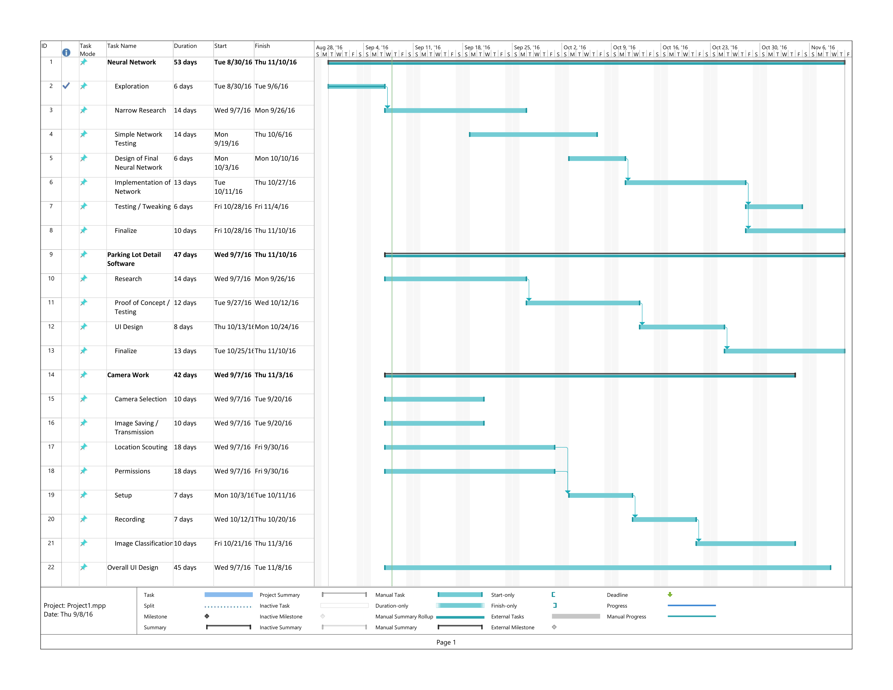

Executive Summary
Many current systems for monitoring parking space usage are very hardware heavy and often not worth the effort of setting up for smaller areas. Instead of tracking parking spaces with hardware in or around each one, a camera can be used to track multiple spaces at once. This would allow for simpler setup and will assist in pointing out parking issues such as a full lot or long-term over/under-use.
To accomplish this, a deep learning framework will be used to recognize the difference between a parked car and an empty parking space. Reports on the status of a monitored area will be generated and saved for future use.
Items of future improvement during the project will be accuracy of information and ease of use and setup. The initial focus is on getting a proof of concept up and running, but given enough time and opportunity, improvements in these two areas would be key.
The system must be reasonably accurate and be able to track a large enough number of parking spaces to recommend this system over existing methods to track vehicles in a parking area. Similarly, the system must be somewhat easily set up and maintained for the end user, if the goal is to replace existing systems.
Statement of the Problem
Recording usage of parking lots is important for measuring future need and if present locations are meeting demand. Current solutions typically require hardware to be installed in every parking spot, which leads to long installation times and high cost of setup. For smaller parking lots, this can be prohibitive.
A faster to setup, cheaper solution that can be used for small to medium parking lots would allow for more complete gathering of parking statistics and better usage of parking services.
Initially, this solution will be applied to live tracking of lot usage, to report to drivers and parking services when a parking area is full. Beyond that, long term tracking can allow better assignment of parking passes in areas that have limited available spaces.
Objectives
Our team will use captured images of parking lots to classify individual spaces as either occupied or vacant. This will be done through the use of one or more cameras that overlook the parking area that will feed into a system that will analyze the images.
Information about the monitored parking spaces will be rapidly accessible (sub minute intervals), and a report of how many spaces are in use at the moment will be view-able. Going forward, saving this information in a database to analyze at a later date is also a goal.
Technical Approach
Tracking of lot usage will be done using computer vision. Images will be captured from an elevated viewing angle, such as on top of a building or light fixture overlooking the lot. The images captured from this camera will sent to a computer and be fed into a neural network that will identify if individual spaces in the parking lot have vehicles in them.
The neural network will initially be trained on a database of images gathered by the Federal University of Paraná for a proof of concept. Going forward, the network can be retrained on images captured and owned by the team or another organization.
The deep learning library that will be used for this project is Caffe, created by the Berkeley Vision and Learning Center, and the surrounding software for saving images and separating each parking space will primarily be written in Python.
Project Schedule
(Click to Enlarge)
{kind=link}

Deliverables
The deliverable for this project will be a system that will take saved images of parking lot areas and identify if marked out locations are occupied or not, and give information about it.
There will be a user interface for looking at reported information and viewing captured images.
If time allows, additional features will include an interface for easily marking new parking areas to monitor, as well as a solution for adding new cameras to the system and connecting them to a computer to quickly transmit captured images.